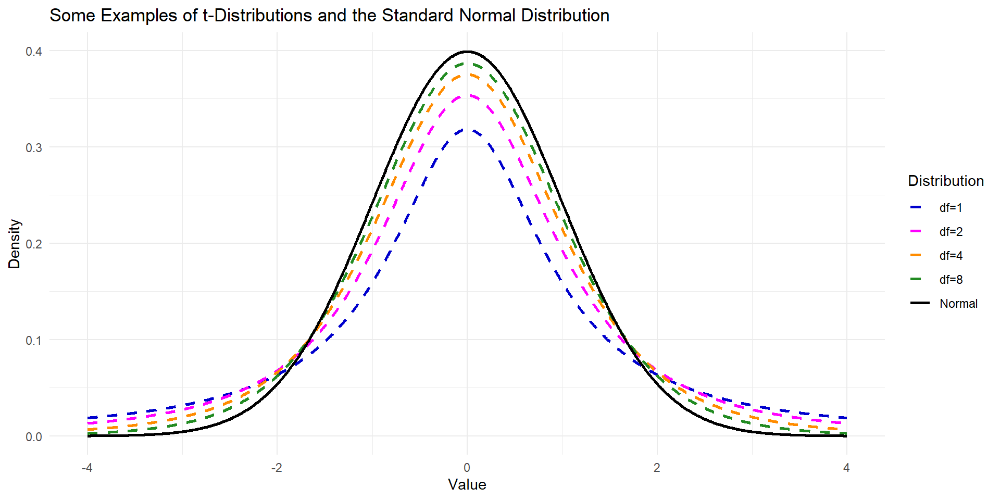

Confidence Interval for µ
STAT 218 - Week 4, Lecture 3
An Example for Statistical Estimation
Let’s have a look wing areas of 14 male Monarch butterflies at Oceano Dunes State Park in California
- \(\bar{x} = 32.81\) \(cm^2\) and \(s= 2.48\) \(cm^2\)
Suppose we consider these 14 observations as a random sample from a population.
- \(\mu\) = the (population) mean wing area of male Monarch butterflies in the Oceano Dunes region
- \(\sigma\) = the (population) SD of wing area of male Monarch butterflies in the Oceano Dunes region

From the sample data we have, we can say that
- 32.81 is an estimate of \(\mu\).
- 2.48 is an estimate of \(\sigma\).
Monarch Butterfly Revisited - I
Let’s have a look wing areas of 14 male Monarch butterflies at Oceano Dunes State Park in California
- \(\bar{x} = 32.8143 \ cm^2\) and \(s= 2.4757 \ cm^2\)
Suppose we consider these 14 observations as a random sample from a population. For the multiplier, it is given as
\[ \\ multiplier = 2.160 \]
95% confidence interval (CI) for \(\mu\) can be calculated as following:
- \(\bar{x} = 32.8143 \ cm^2\) and \(s= 2.4757 \ cm^2\)
\[ \\95 \% \ CI = (\bar{x} \pm multiplier \ \times \ SE_{\bar{x}}) \\95 \% \ CI = (32.8143 \pm 2.160 \ \times \ 2.4757 / \sqrt{14}) \]
\[ \\= 32.81 \pm 1.43 \\ 31.43 \ cm^2 < \mu < 34.2 \ cm^2 \\ OR \\ 95 \% \ CI = (31.43,34.2) \]
Monarch Butterfly Revisited - II
90% confidence interval (CI) for \(\mu\) can be calculated as following (multiplier:1.771):
- \(\bar{x} = 32.8143 \ cm^2\) and \(s= 2.4757 \ cm^2\)
\[ \\90 \% \ CI = (\bar{y} \pm multiplier \ \times SE_{\bar{x}}) \\90 \% \ CI = (32.8143 \pm 1.771 \ \times \ 2.4757 / \sqrt{14}) \]
\[ \\= 32.81 \pm 1.17 \\ 31.64 \ cm^2 < \mu < 33.98 \ cm^2 \]
What is the difference between 90% CI and 95% CI?
Confidence Interval and Sampling Distribution

Same Example from Last Week - IV
Suppose the researcher is now planning a new study of butterflies Monarch butterflies at Oceano Dunes State Park in California and has decided that it would be desirable that the SE be no more than \(0.4 \ cm^2\)
- \(\bar{y} = 32.8143 \ cm^2\) and \(s= 2.4757 \ cm^2\)
\[ SE_{\bar{y}} = s / \sqrt{n} \]
\[ Desired \ SE = Guessed \ SD / \sqrt{n} \]
\[ \\Desired \ SE = 2.48 / \sqrt{n} \ \le 0.4 \\ n\ge 38.4 \] \[ \\ at \ least \ 39 \ butterflies \]
- You may wonder how a researcher would arrive at a value such as \(0.4 \ cm^2\) for the desired SE. Such a value is determined by considering how much error one is willing to tolerate in the estimate of μ.